Copyright © 2019
All rights reserved
Design by Paul Weaver
Police Brochures
Crime prevention bookmarks created for the Corvallis Police Department to inform the public about local laws that are relevant to the everyday lives of citizens. Team project with Jamie Ortbal, Lance Wilson, and myself.
 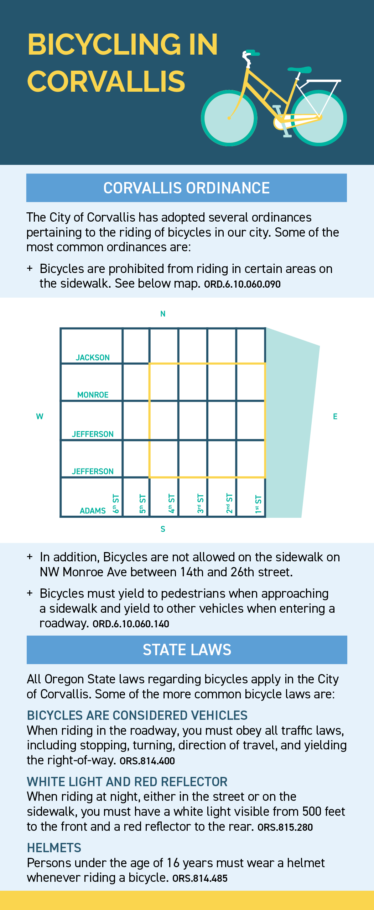
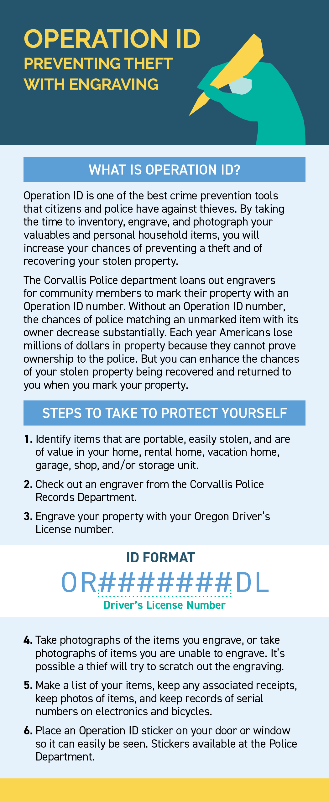
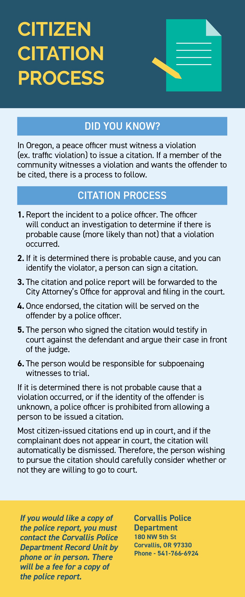
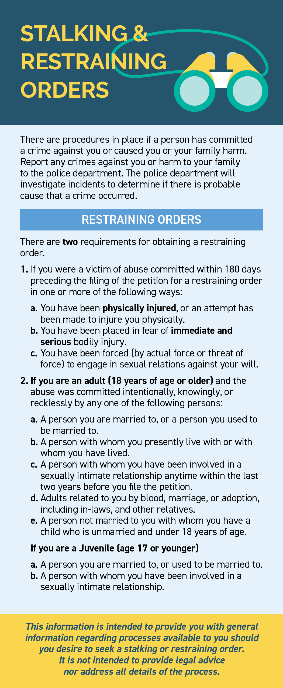
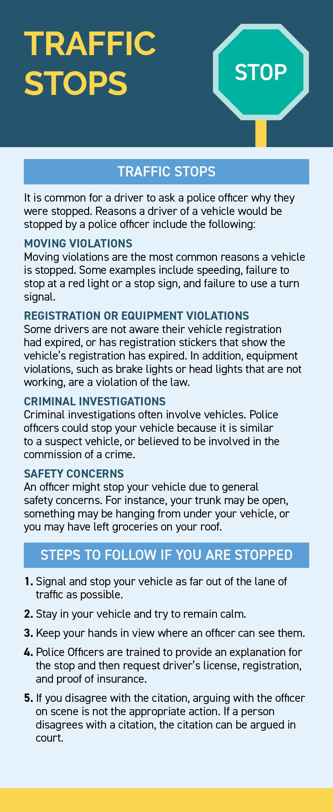
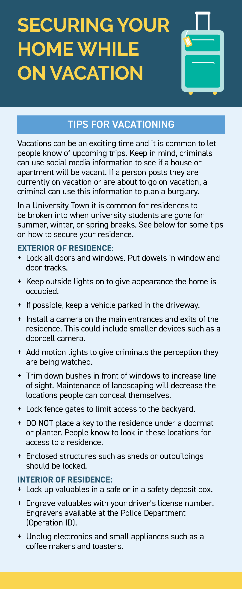
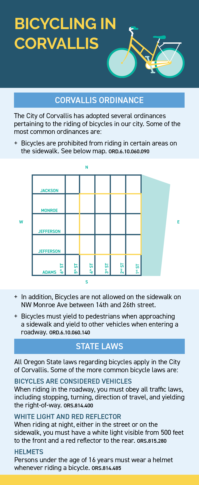
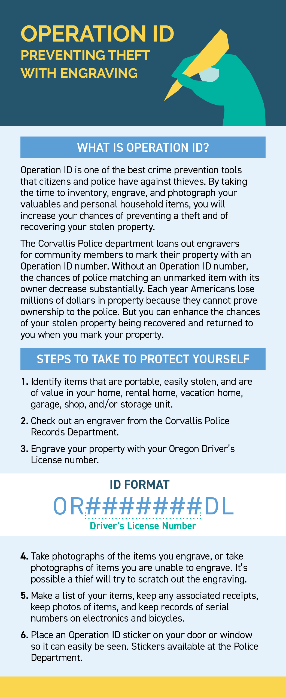
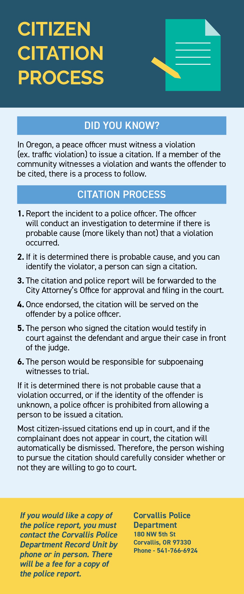
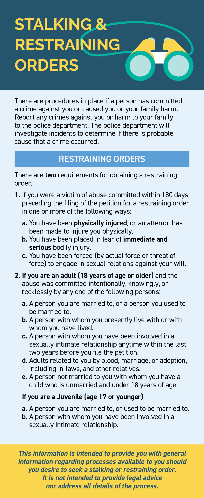
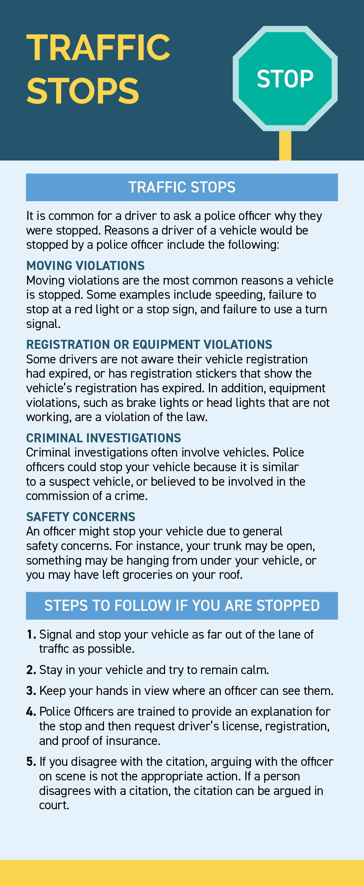
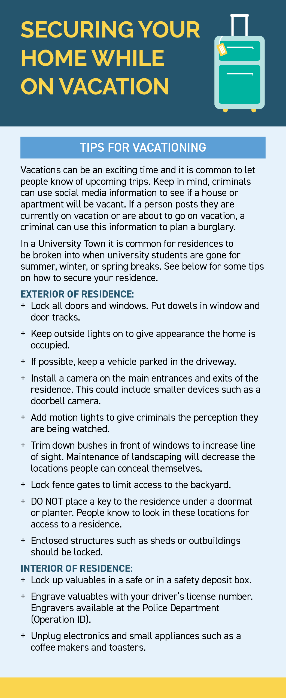
Police Brochures, 2018